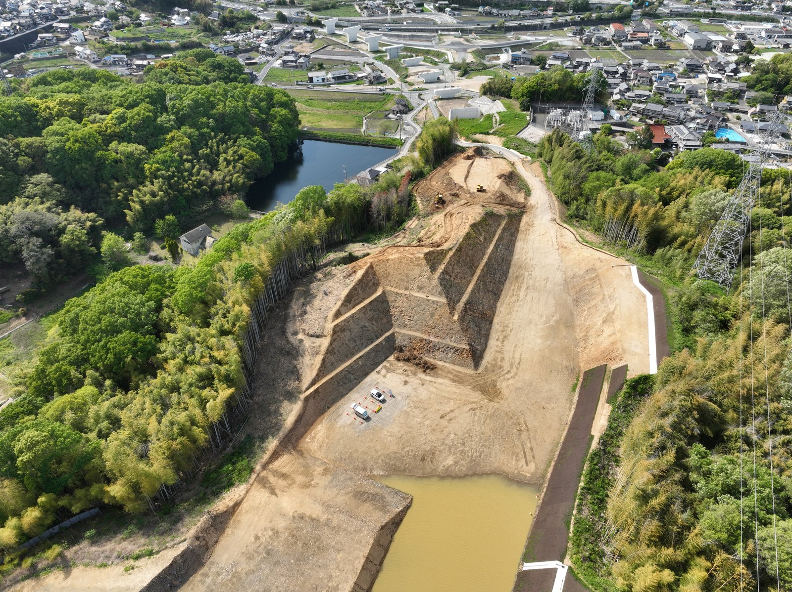

3次元モデル設計・施工
詳細度200〜300の3次元モデルで設計・施工管理を実施。図面と現場のずれをなくします。
国土交通省 中国地方整備局 福山河川国道事務所 発注
YAMAKITA #4 ROAD IMPROVEMENT // FY2025
SITE OPERATED BY 株式会社 鴻治組

CONSTRUCTION SITE
工期 ―― 取得中
国道2号バイパスとして整備が進められている「福山道路」の山岳部切土区間です。 地域の皆様の生活道路と並行して工事を進めますので、ご不便をおかけしますがご協力をお願いいたします。
SECTION LENGTH
0m
工事延長
EXCAVATION
0m³
掘削土量
CLEARING
0m²
伐採面積
ICT LEVEL
0/ 5
ICT施工段階
BIM/CIM と ICT施工 段階4 を活用し、3次元設計データに基づく高精度な施工を行っています。 完成後は山岳部を切り開いた切土区間として、福山道路の整備に資する道路改良となります。
詳細度200〜300の3次元モデルで設計・施工管理を実施。図面と現場のずれをなくします。
DJI Mavic 3 Enterprise RTK で起工測量を行い、3DマシンガイダンスのICT建機で施工。点群による出来形管理まで一気通貫。
登録事業者率90%以上・登録技能者率80%以上を目指す活用推進モデル工事。建設業の働き方改革に貢献します。
通学時間帯の運搬禁止／工事用道路20km/h厳守／交通誘導員配置で、地域の安全を最優先に施工します。
残土搬出のため 10tダンプトラック が現場に頻繁に出入りします。 地域の皆様の安全を最優先に、以下のルールを厳守して運行しています。
月ごとの主な進捗と現場写真を掲載しています。
近隣の皆様へお知らせする工事連絡・通行規制・夜間作業等の情報を掲載します。
工事に関するご質問・ご相談は下記までお気軽にご連絡ください。
※受付時間 平日 8:00〜17:00 ／ 休日・夜間は会社代表電話の音声案内をご確認ください。